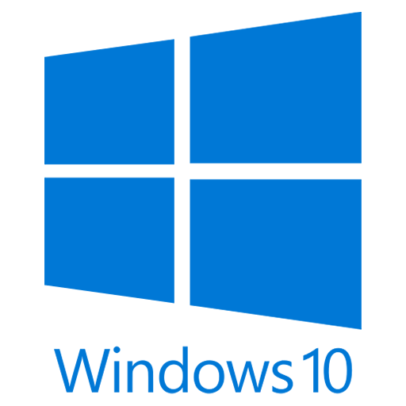
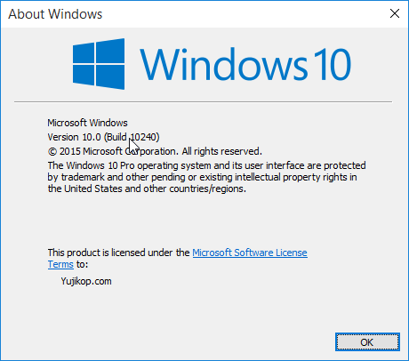

Left
About | Microsoft Windows 10
Middle
Windows 10 merupakan sistem operasi komputer pribadi yang dikembangkan oleh Microsoft sebagai bagian dari keluarga sistem operasi Windows NT. Diperkenalkan pada tanggal 30 September 2014, dirilis pada 29 Juli 2015 dan pada November 2015, Threshold 2 dari Windows 10 (v10.0.10586) dirilis ke publik.

Windows 10 bertujuan untuk mengatasi kekurangan dalam antarmuka pengguna pertama kali diperkenalkan oleh Windows 8 dengan menambahkan mekanik tambahan yang dirancang untuk meningkatkan pengalaman pengguna.

Right
Pertama diperkenalkan pada bulan April 2014 pada Konferensi Build
Artikel responsif Lain